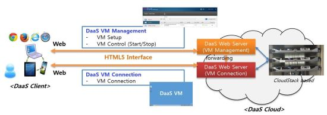

DaaS Web Client
With the help of virtualization and high-bandwidth network, virtual desktop is becoming popular technique. Virtual desktop is launched on server using virtualization technique. Then client connect the virtual desktop over the network using remote desktop protocol. This service is usually called DaaS (Desktop as a Service) or VDI (Virtual Desktop Infrastructure).
With DaaS service, user can use his virtual desktop on remote cloud center using his local client device (e.g., laptop, tablet, smartphone, etc.) anywhere. Nowadays Web-based remote desktop connection technique is utilized to connect remote virtual desktop because of platform & OS independence. However, current Web-based remote desktop connection technique has critical limitations. First, it does not support high-resolution remote presentation. It means it occurs screen delaying and long response time. Second, it does not support sound functionality.

In this research, we propose DaaS Web client. We developed HTML5-based Web remote desktop connection technique. It has several advantages. First, it is developed using HTML5 standard. In other words, it can run on any platform, any OS, and any modern Web browser. Second, it supports high-resolution remote presentation. For example, it present full-HD resolution (1920×1080) video screen with 25 frame per second. Third, it support sound functionality. Therefore, we can hear sound of remote desktop on local device.
Demo
Publications
- 가상 데스크탑 환경 상 고해상도 원격 화면 전송 기술 연구. 성백재, 박찬익. 2011 대한임베디드공학회 추계학술대회, 2011. 11. 12.
- 데스크 탑 가상 머신 라이브 마이그레이션에서 ASLR이 메모리간 중복성에 미치는 영향. 박광용, 오영섭, 성백재, 박찬익. 2013 대한 임베디드공학회 추계학술대회, 2013. 11. 15 (우수논문 발표상)
Patents
- In course of preparations for patent